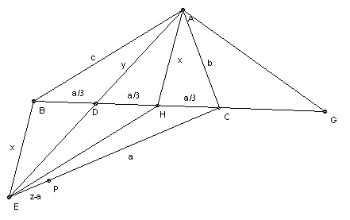

ABC is a triangle with angle C = 2 x angle B. D is a point on the side BC such that DC = 2 BD. E is a point on the line AD such that D is the midpoint of AE. Show that ∠ECB + 180o = 2 ∠EBC.
Solution

As usual put BC = a, CA = b, AB = c. Let H be the midpoint of CD, so that BD = DH = HC = a/3. Let AH = x, AD = y. Since D is the midpoint of BH and AE, ABEH is a parallelogram, so EH = c, EB = x. Put EC = z. Extend BC to G so that CG = CA = b. ∠ACB = ∠CAG + ∠CGA = 2 ∠CGA. We are given that ∠ACB = 2 ∠ABC, so ABG is isosceles and similar to CGA. Hence AB/BG = CG/GA or c/(a+b) = b/c or c2 = b(a + b).
Now consider triangle ACD. Applying the cosine formula to ADH and AHC we have y2 = x2 + (a/3)2 - 2x(a/3) cos AHD, b2 = x2 + (a/3)2 - 2x(a/3) cos AHC. Adding, b2 + y2 = 2x2 + 2(a/3)2 (1) (since cos AHD + cos AHC = 0). [This result for the length of a median is sometimes known as Apollonius' theorem.] Applying the same result to ABH and CDE we get: x2 + c2 = 2y2 + 2a2/9 (2), z2 + y2 = 2c2 + 2a2/9 (3).
(1) + 2 (2) + 3 (3) gives b2 + 2c2 + 3z2 = 6c2 + 4a2/3. Substituting c2 = b(a+b) gives z2 = b2 + 4ab/3 + 4a2/9 = (b + 2a/3)2. So z = b + 2a/3.
2 (1) + (2) gives: 2b2 + x2 + c2 = 4x2 + 2a2/3. Substituting for c gives x2 = (b + 2a/3)(b - a/3). Using the result for z, we may write this as x2 = z(z - a).
Take P on EC so that PC = BC = a. Then EP = z - a, so BE/CE = EP/BE. Hence triangles BEP and CEB are similar. So ∠ECB = ∠EBP = ∠EBC - ∠PBC = ∠EBC - 90o + ∠ECB/2. Hence ∠ECB = 2 ∠EBC - 180o.

© John Scholes
jscholes@kalva.demon.co.uk
30 Aug 2002